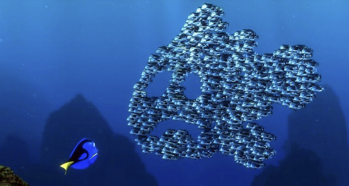
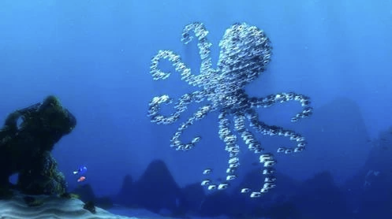

Overview
Given a text input, we will generate a particle simulator where randomly positioned particles will transform into a 3D cloud point structure representing the input text through swarm intelligence. For example, if the text input was “apple”, the original particles will map to a new position to spell out “apple” in a 3D format.
Problem Description
Particle simulation is important as it is used very often when rendering images in the real world and the entertainment industry. It is a vital technique that is used in VR/AR, gaming, generating celestial bodies for space exploration, and also animation. In fact, the inspiration behind this project came from a scene in Finding Nemo where a school of fish clustered together to form different images.
|

School of moonfish forming Marlin
|

School of moonfish forming an octopus
|
However, creating a particle simulator is challenging because it involves controlling the behavior of a large collection of objects that are mutually dependent and highly interactive with one another. This leads to a problem that is innately computationally intensive.
To solve this issue, we plan to utilize a modified boids model to control the movement of individual particles while also taking into account the position and movement of neighboring particles. We will try different algorithmic approaches to force convergence to a point cloud generated by the Point-E 3D point cloud ML model to simulate random particles into a recognizable structural image based on a text input. We will also likely need to implement an upsampling/downsampling algorithm for the point cloud to support different numbers of boids as well as different granularities of the generated point cloud.
Goals and Deliverables
-
Baseline Plan
- Initially, our interactive system will consist of particles randomly flocking in our display. The user will be able to enter a text prompt and we plan to use the Point-E 3D point cloud ML model to transform the randomly positioned particles into a structured image corresponding to the text prompt. To ensure all particle points are continuously mapped to their 3D point cloud, we will program a flocking algorithm so that each particle will move based on its neighboring particles’ positions and velocities. It is likely that we will want to change the type of particles mapped to the 3D point cloud to generate more interesting and unique particle simulations. In that case, we will implement material modeling to alter the particle types.
- If the ML model takes too long to run, we can alternatively pregenerate point clouds and allow the user to switch between point clouds through input.
- A potential issue we may encounter is whether or not the number of points is customizable. If it is not, we plan to integrate an algorithm to reduce the number of points. We can measure the quality and performance of our system by testing how long the model takes to run and how smoothly the particles map to their corresponding locations in the point cloud while minimizing path crossings.
-
Aspirational Plan
- insert stuff about rendering for snowglobe
Schedule
-
4/2 - 4/8:
- Submit project proposal
- Look into academic works relating to particle simulators
- Study open source projects related to Point-E 3D point cloud models, material modeling, and other models we plan to use
- Create some pseudocode and outline how our code will be formatted
-
4/9 - 4/15
- Program the initial state of particles that are randomly generated positioned
- Implement the input text feature
- Begin implementing Point-E 3D point cloud model
- Brainstorm flocking algorithm and material modeling
- Start creating the Milestone Deliverable
-
4/9 - 4/15
- Program the initial state of particles that are randomly generated positioned
- Implement the input text feature
- Begin implementing Point-E 3D point cloud model
- Brainstorm flocking algorithm and material modeling
- Start creating the Milestone Deliverable
-
4/16 - 4/22
- Submit Milestone Deliverable
- Finalize the Point-E 3D point cloud model
- Implement flocking algorithm and material modeling
-
4/23 - 4/29
- Finalize the complete particle simulator
- Program any additional algorithms/models if time permits
- Create final video, web page, and paper
-
4/30 - 5/3
- Submit Final Deliverable
- Practice for final presentation
Resources
We plan to utilize multiple online resources and websites when implementing our particle simulator. Here is a comprehensive list of the models/algorithms we plan to use and their corresponding references.
- Point-E 3D point cloud model
- Point Cloud Upsampling
Flocking Algorithm
Material Modeling
PIC and FLIP
Position Based Fluids algorithm
To program our project, we plan to use our personal laptops and use GitHub to collaborate and share our code with each other.